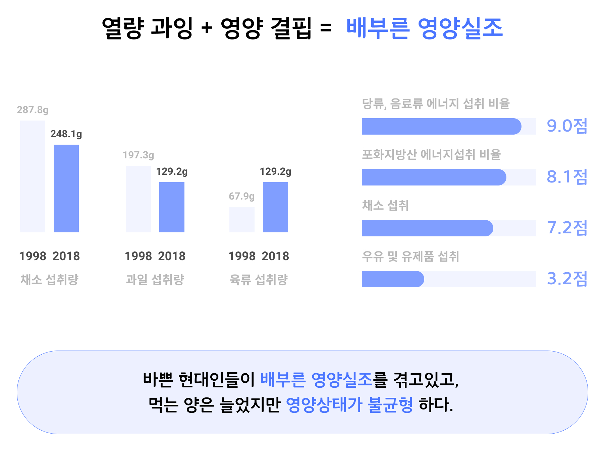
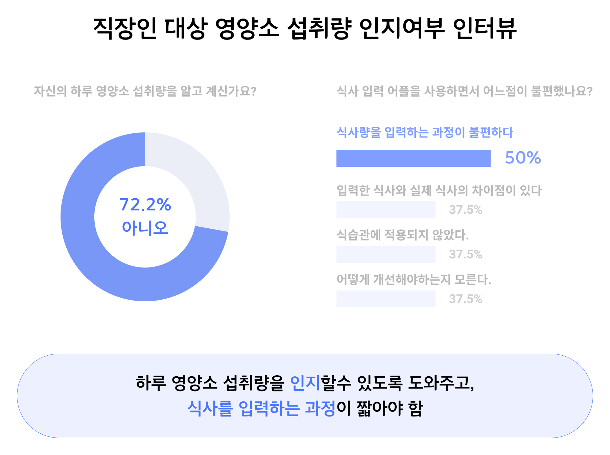
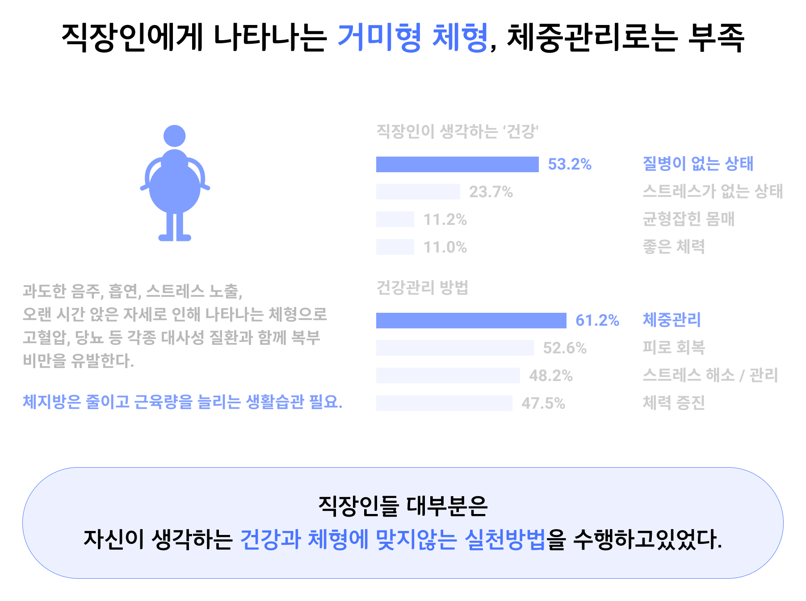
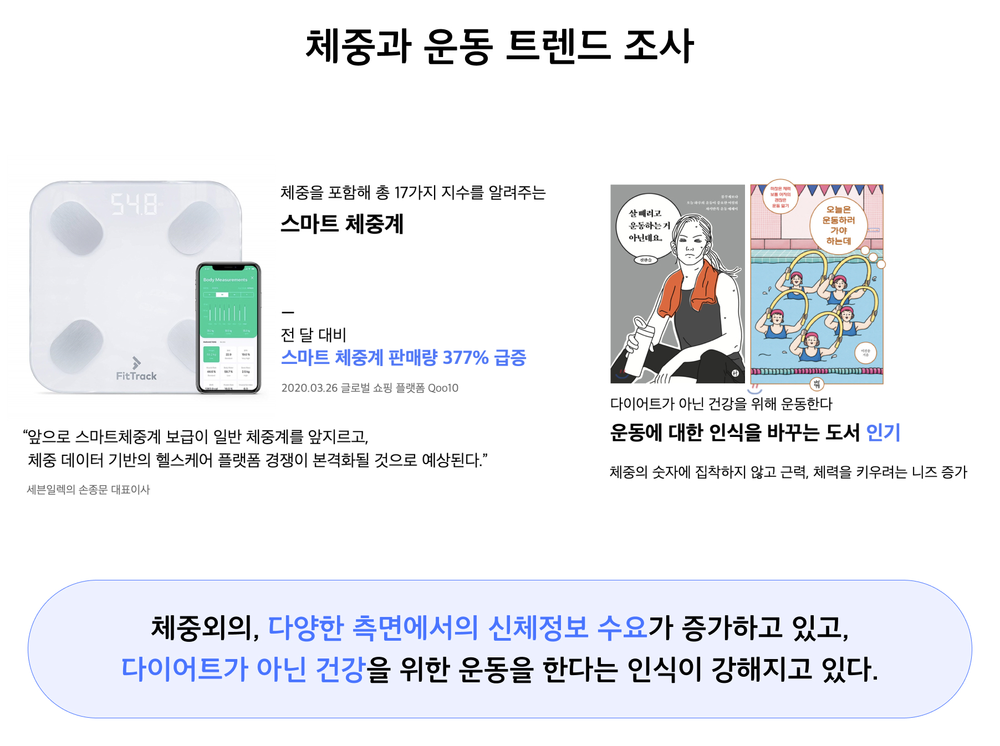
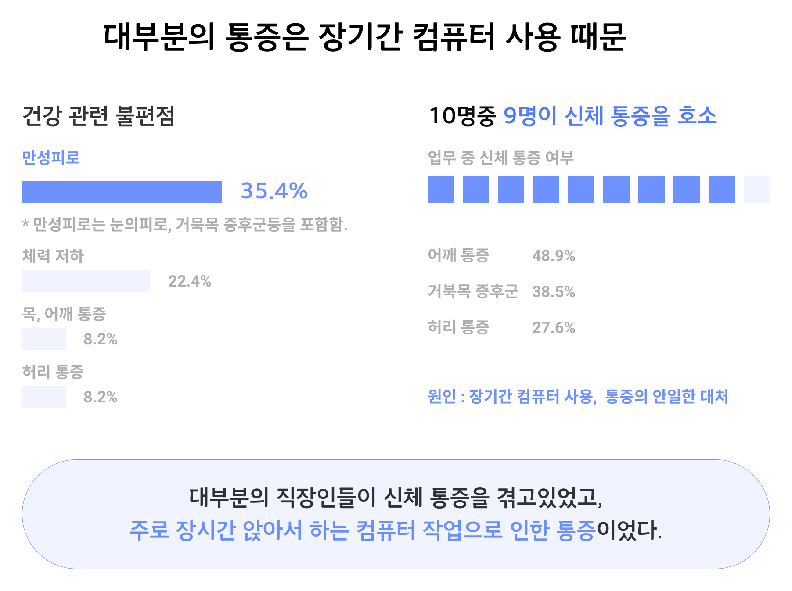
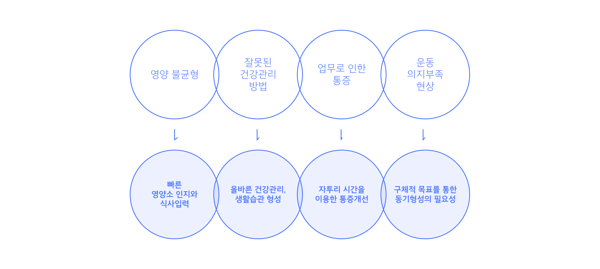
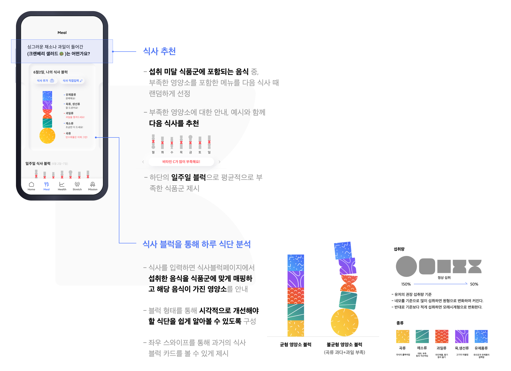

블럭을 통해 내 몸의 균형을 찾자!
To-B는 개인 삶의 활력 증진과 업무 생산성 향상을 위한
직원용 건강 케어 서비스입니다.
To-B는 개인 삶의 활력 증진과 업무 생산성 향상을 위한
직원용 건강 케어 서비스입니다.
Date : 2020
Category : UX design
Contribution : 60%
Category : UX design
Contribution : 60%
 직원들의 건강은 개인 삶의 활력에도 크게 작용하지만 업무의 생산성에도 크게 관여합니다.
투비는 직장인들이 회사업무에 영향을 끼치지 않는 선에서 직장 안팎으로 틈틈이 건강관리를 도와줘 내 몸의 균형을 찾아주는 서비스입니다.
직원들의 건강은 개인 삶의 활력에도 크게 작용하지만 업무의 생산성에도 크게 관여합니다.
투비는 직장인들이 회사업무에 영향을 끼치지 않는 선에서 직장 안팎으로 틈틈이 건강관리를 도와줘 내 몸의 균형을 찾아주는 서비스입니다.먼저,타겟유저의 니즈를 알아보기 위하여 직장인의 생활에 대해 알아보고자 했습니다.
필드리서치와 인터뷰를 진행하고 현재 헬스케어 산업의 트렌드에 대한 조사를 시작했습니다.
직장인과 식생활


직장인과 건강관리



직장인과 업무 중 통증

직장인과 운동
Solution

Branding
영양관리

생활습관,체성분 관리